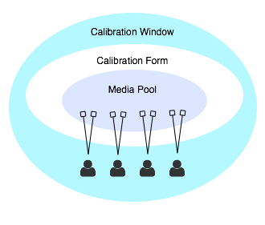

In order for Calibrations to function, a Rubric must be created or uploaded. You can have a handful of Rubrics, but one Rubric must be set as a default.
How do Calibration Forms and Calibration Windows Relate?
Calibration Windows define the date range and the Observers who should do the calibration. The Window uses a published Calibration Form in order to serve each Observer unique yet equivalent content. This content is pulled from the Calibration Form's Media Pool of approved Videos and Artifacts.

Set Calibration Windows
Calibration events have a number of settings including a date range which is a window for when your Observers can Calibrate. When you create a Calibration Window ...more